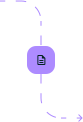
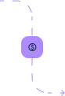

Точно знаете, какие цветы продаются лучше. Учёт сопутствующих товаров, упаковки, и даже кофе. Экономьте, сокращая процент списаний.
Кому подойдет Посифлора
Любой формат цветочного бизнеса
Возможности
Мы позаботились, чтобы все было невероятно просто и удобно,
чтобы вы и ваши флористы справились
Прием товаров
Принимать товары и моментально назначать цены в Посифлоре можно удалённо с домашнего компьютера или телефона. Флористы не смогут продать цветы дешевле.

Продажи в торговом зале
Ваши флористы могут сосредоточиться на сборке букетов и общении с клиентами.
Посифлора автоматически считает цену букета и сверяет остатки.
Онлайн-витрина
Витрина, сайт и соцсети вашего магазина — одно целое.
Вы один раз настраиваете и больше не возвращаетесь к этому вопросу.

Удалённый контроль
В своём телефоне видите, что происходит в магазине:
выручка,
чеки и предзаказы,
остатки по позициям и списания.
Это помогает принимать правильные решения.
Стабильная работа программы и сохранность ваших данных
Посифлора делает резервную копию всех данных.
Даже если произойдёт сбой, мы сможем их восстановить.
Если отключат интернет, программа продолжит работать автономно.
Мы готовы к 20-кратному росту нагрузки в праздничные и предпраздничные дни Работаем в одном из самых надёжных дата-центров.
Контроль ключевых показателей
Поручите рутинную работу Посифлоре
Функции для увеличения продаж
Повышайте выручку на системном уровне